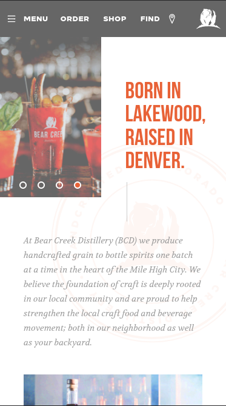
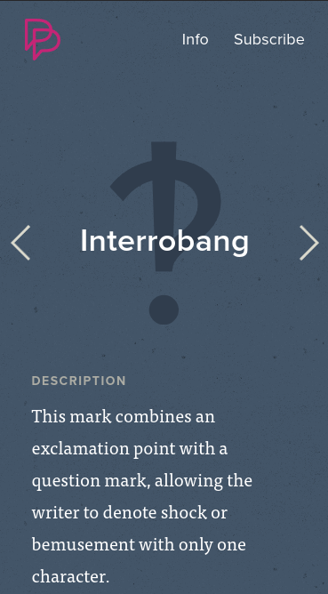

White Space and Clean Design
Beak Creek Distillery
bearcreekdistillery.comBear Creek Distillery is a great website for looking at how white space can add to a website instead of feeling empty. Using these large spaces it helps with mobile devices to not feel crowded and give little snippets of content to consume.
PARC: Proximity
Progressive Punctuation
progressivepunctuation.comProgressive Punctuation show that you don't need to cram content close together to ensure that you know where to go. It also shows that you can still have items close together without cramping them.
PARC: Alignment
The Templeton Prize
templetonprize.orgWhile The Templeton Prize was a struggle to navigate on mobile, the landing page shows great use for aligning most of the content to the left, giving a sort of reading vibe. The major problem I had was that you couldn't get rid of the subscribe component below causing the screen to be a little cramped.